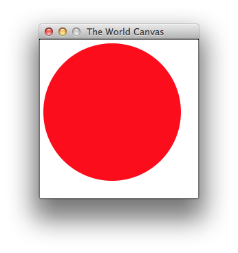

2 Classes in Racket
At first glance, a Racket class resembles its cousins in C#, Java, or most class-based object-oriented programming languages. A program can define a plain class, instantiate it, send messages to the resulting object, and extend the class. Furthermore, Racket’s GUI API employs a classic framework of classes, organized in a hierarchy, expecting a client program to derive class extensions to implement functionality.
2.1 Of Classes and Objects
several fields that require initializations: state0, to-draw, width, height;
two fields that require optional initializations: on-mouse, and on-key;
one public method: start; and
some private fields: frame, visible, and editor-canvas.
; the world as an object that reacts to key events and mouse clicks (define world% (class object% (init-field ; exists type State ; State state0 ; State -> Image to-draw ; Number width ; Number height ; [State Nat Nat MouseEvent -> State] or #f (on-mouse #f) ; [State KeyEvent -> State] or #f (on-key #f)) ; -> Void (define/public (start) (send editor-canvas min-client-width (+ width INSET INSET)) (send editor-canvas min-client-height (+ height INSET INSET)) (send editor-canvas focus) (send frame show #t)) ; PRIVATE: the content of figure 3 goes here ... (super-new)))
... ; (instance-of Frame%) (define frame (new frame% (label "The World Canvas") (alignment '(center center)) (style '(no-resize-border)))) ; (instance-of World-pasteboard%) (define visible (new world-pasteboard% [state0 state0] [to-draw to-draw])) ; (instance-of World-editor-canvas%) (define editor-canvas (new world-editor-canvas% [on-key (lambda (ke) (define state (send visible get)) (send visible update! (on-key state ke)))] [on-mouse (lambda (x y me) (define state (send visible get)) (send visible update! (on-mouse state x y me)))] [good-mouse? (lambda (x y me) (or (and (<= 0 x width) (<= 0 y height)) (member me '("leave" "enter"))))] (parent frame) (editor visible) (stretchable-width #f) (stretchable-height #f) (style '(no-hscroll no-vscroll)) (horizontal-inset INSET) (vertical-inset INSET))) ...
A second look reveals a seemingly minor difference between Racket and other object-oriented languages. While most such language mingle the act of naming a class and defining it, Racket separates the two. Here Racket’s define associates the identifier world% with the value of an expression, which happens to be to a class value. In other contexts, define may associate an identifier with a number, a function, or an object.
The class expression itself starts with a reference to object%, the root of the class hierarchy. A Java programmer may instead write extends Object (or may rely on the default specification). In Racket, this position is actually evaluated and must yield a class value.The immutability of the class value provides additional protection especially when compared to class values in Python, which are really just hash tables. The rest of the class expression calls for class features: public or private field definitions, public and private methods definitions, and even arbitrary expressions. As in Java, class features have a fixed shape, and a class is an unchangeable entity for the rest of the program.
When Racket instantiates such a class, it sets up the fields and method
definitions, collects the expressions, and evaluates the latter in
sequence—
(define a-world (new world% [state0 10] [to-draw render] [width 220] [height 220] [on-mouse less1] [on-key less1]))
> (send a-world start) ... see screenshot ...
> (get-field width a-world) 220
> (set-field! width a-world 440)
> (get-field width a-world) 440

frame, which is an instance of the top-level window class with required settings for its initial public fields;
visible, a pasteboard object, which is an editor that allows the explicit positioning of items, including images;
editor-canvas, which establishes the context for editors such as a pasteboard.
2.2 Class Extensions
Racket’s GUI framework is like that of many object-oriented languages. It provides a number of useful base classes with which programmers can create simple GUI programs, but for even moderately interesting interfaces, a programmer must derive a new class from one (or several) of these base classes in order to implement the desired behavior. In the simplest case, the derived class adds behavior to the base class via new public methods.
Figure 5 shows how to implement the world-specific pasteboard editor in this manner. The world-pasteboard% class extends the Racket pasteboard implementation. Hence, the class expression uses pasteboard% instead of object% in the super-class position.
; a pasteboard editor managing the state of the world & its view (define world-pasteboard% (class pasteboard% (init-field to-draw state0) ; as above ; State -> Void ; update the current state to s and ; display the state in visible using to-draw ; effect: mutate state, modify view in pasteboard (define/public (update! s) (set! state s) (show (to-draw s))) ; -> State ; retrieve current-state (define/public (get) state) ; PRIVATE: the content of figure 6 goes here ... (super-new) ; more initialization: (reset!)))
The derived class specifies two initial fields: to-draw and state0. Since pasteboard% does not come with mandatory initial fields, instantiating this world-specific pasteboard class requires just two values as the definition of visible in figure 3 already shows.
Besides the two new initial fields, the derived class adds two public methods to those inherited from its superclass: update! and get. While a statically typed language checks at compile time that these new public methods do not interfere with existing public methods, Racket must enforce this invariant when it evaluates the class expression. Once these checks pass, Racket creates an appropriate class value.
(delete arg ...)
(inherit delete find-first-snip insert lock begin-edit-sequence end-edit-sequence) ; State ; current state of the world (define state state0) ; -> Void ; initialiaze state and show its image in visible ; effect: mutate state, modify pasteboard (define/private (reset!) (set! state state0) (show (to-draw state))) ; Image -> Void ; show the image in the visible world canvas ; effect: modify pasteboard (define/private (show pict) (begin-edit-sequence) (lock #f) (define s (find-first-snip)) (when s (delete s)) (insert (send pict copy) 0 0) (lock #t) (end-edit-sequence))
The private part of world-pasteboard% implements reset! and show, the two methods called from the public part of the class. As figure 6 shows, the show method is the workhorse, manipulating the editor with a delicate sequence of actions. While the details are irrelevant for this essay, the interested reader may wish to explore the meaning of these methods in the documentation.
; an editor-canvas editor that deals with key events and mouse clicks (define world-editor-canvas% (class editor-canvas% (init-field ; type State ; KeyEvent -> State on-key ; Nat Nat MouseEvent -> State on-mouse ; Nat Nat MouseEvent -> Boolean good-mouse?) ; (instance-of Key-event%) -> State ; compute new state in reaction to key event (define/override (on-char e) (on-key (key-event->parts e))) ; (instance-of Mouse-event%) -> State ; compute new state in reaction to mouse event (define/override (on-event e) (define-values (x y me) (mouse-event->parts e)) (when (good-mouse? x y me) (on-mouse x y me))) ; PRIVATE: ... (super-new)))
Figure 7 introduces one more element of Racket’s class language: method overriding. Like C# and unlike Java, Racket demands an explicit override specification for methods. Using this specification, it can check during the evaluation of a class expression whether the given superclass comes with the required public super method; if not, Racket can signal an error during class creation. While this check helps programmers find subtle mistakes early, it again allows Racket to specialize invocations of overridden super methods.
Concretely, figure 7 presents the world-specific canvas class. It extends Racket’s editor-canvas% class with two overriding methods: on-char and on-event. The first deals with key events, invoking the programmer-supplied on-key function on the relevant pieces of the data representation of a char event. The second processes mouse events, again with a programmer-supplied on-mouse function that receives only the relevant parts of a mouse event.
Use the complete code these world classes for to experiment with class-based object-oriented programming in Racket.